| ◆緑化委員会2010 |
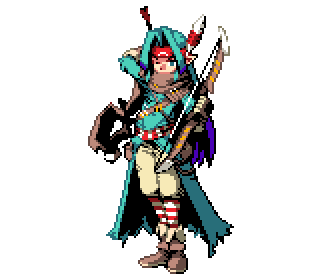 |
| 名前：アーディス |
緑化委員会委員長。つまり俺。 2000RTP主人公2-7(エルフ男)という由緒正しい出自を持つ。 熱血キャラとか顔伸ばしとかあの手この手で努力を続けた結果、緑化委員会というキャラ作りに成功した。 同時に多くの緑キャラたちに日の目を当てることとなり、常に羨望と感謝の眼差しで英雄視されている。 しかしながら緑キャラたちの扱いが改善されているとは言いがたい。 俺はこんなにがんばっているのに…… これはひとえに、メンバーの努力が足りないのだろう！ 現に、昨年度までの「努緑賞」(毎年、特別に努力が認められた者に送られる賞)は、 常に連続でこの俺が受賞し続けている…… 次点ながら、ドラゴン500匹と同等のパワーを持つダークエルフを通常攻撃一発で沈めたドラゴン委員もいたが、 残念ながら受賞には至らなかった。 来年度こそ「努緑賞」を受賞できるように、これからも緑化委員会の一同は努力を続けてほしい！ それが俺の変わらぬ願いだ！ |
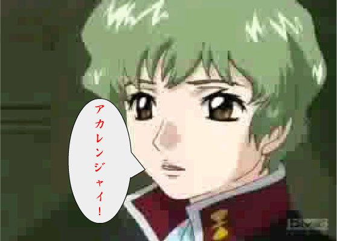 |
| 名前：アカレンジャイ |
アイドルグループ「ザフト」所属。 名前こそ赤いが、それは世間とメンバーを欺くためのものであり、 赤と黄だけで構成されたグループにさりげなく緑を持ち込むことに成功している。 アイドル活動を隠れ蓑にしながら、緑を世間に広める活動をする工作員である。 お母さん思いなところがあり、メンバーからの信用も厚い。 |
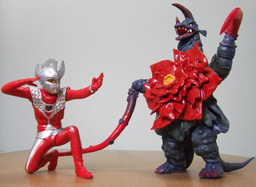 |
| 名前：アストロモンス |
宇宙大怪獣アストロモンスは、チグリスフラワーという植物が怪獣化したもの。 地球生まれの癖に出身が宇宙になっていて宇宙大怪獣と呼ばれるあたり、かなり出自が怪しい。 ムチ、カマ、共産制溶解液など複数の武器を持ち、なぜか空を飛ぶ。主食はオイルドリンカー。 溶解液が共産制であるなど非常に赤い怪獣だが、 ZATに焼却処分されても生きていこうとする逞しい姿勢が評価できる。 ウルトラマンタロウになる前に東光太郎を殺害することに成功しているが、なかなか評価されていない。 おそらく同様に、ウルトラマンになる前にハヤタを殺害することに成功したウルトラマンという先輩がいるためだろう。 |
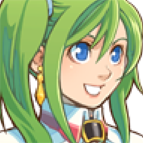 |
| 名前：イングリッド |
VXのActor2-2、いわゆる名無しキャラ。緑色のサイドポニーが特徴。 一度俺のカッ光線を弾き飛ばしたことがあるが、その実力は未だに不明。 たぶんドラ子の親戚。髪型が似てるから間違いない。 |
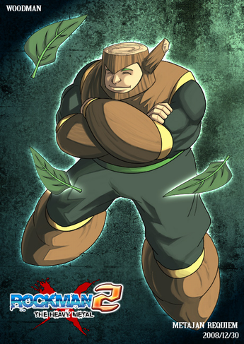 |
| 名前：ウッドマン |
DWN.016 森林戦闘に長けたロボット。 ボディをはじめ、内部のメカに至るまですべてが総ヒノキ造りで非常に高級。 力の強い戦士だが気は優しく、森林破壊を許さない。 ロックマンとの死闘ではリーフシールドを巧みに操り、落ちる木の葉や低空ジャンプで苦しめた。 しかしヒートマン(DWN.015)のパワーを取り込みアトミックファイアーを放ったロックマンに劣勢に追い込まれ、 最後はメタルマン(DWN.009)の武器、メタルブレードでバラバラにされた。 彼の敗北がエアーマン(DWN.010)撃破に繋がり、ワイリーの野望は打ち砕かれることとなった。 ロックマンズサッカー、ロックマン・ザ・パワーバトル、スーパーアドベンチャーロックマンなど、 様々な番外作品にも客演している。 またシリーズ最新作であるロックマン10にも、(本人ではないが)思わぬ形で再登場している。 |
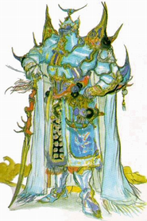 |
| 名前：エクスデス |
強力な暗黒魔道士。ぬの力がトレントに宿った存在で、ファを好む。だからファリス派。でもカメが嫌い。 ぬの力を操り、世界をぬの力で支配しようとするが、 ガラフ、テラ、ダダルマー、ルパインアタックの暁の四戦士(暁所属の忍。首謀者はペイン)によって封印された。 後に火力発電所を部下に襲わせ、混乱に乗じて脱獄。自宅に帰った。 さらに紆余曲折を経てネオエクスデスになるが、ネオジオンやネオ東京との関連は不明。 法則が乱れるとブルブル震えだすバイブレーション機能つき。しかしタイマーの設定はできない。 最近は道場を経営。先生と慕われ、若者たちに経験値を分け与えている。 |
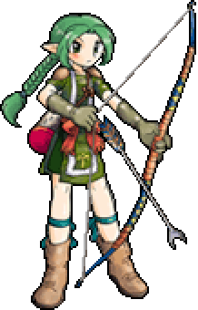 |
| 名前：エステル |
RPGツクールXPのデフォルトデータで、アクターのE。 職業はハンター。エルフ女性ってことでXPヘレンの位置。 緑化委員会のほうにもなかなか顔を出さないのだが なんか俺と結婚していることになっている |
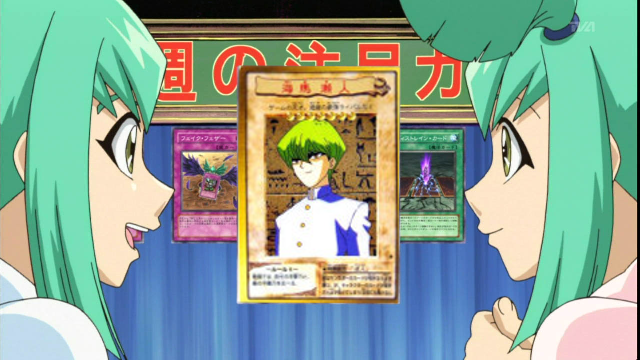 |
| 名前：海馬瀬人 | |
ゲーム産業企業「海馬コーポレーション(通称KC)」代表取締役社長。 弟の海馬オエコモバと同じくゲームの達人。 高橋名人の直弟子であり、驚異的なコマンド入力技術を持つ。 その類まれなるセンスや技術力から数々の新しいゲームや技術を生み出し、 二次元の三次元化という素晴らしい功績を残した。 しかし神のカードとか宇宙の波動をカードに取り込むとかオカルト信仰を持っており、 周囲からはかわいそうな目で見られてる。 が、仕事ができるので誰も咎めることはない。本人曰く心が騒ぐらしい。 「攻撃！破壊！大殺界！」の口癖からわかるように、ギルティギアシリーズ次回作へ参戦する予定。 KCはゲーム企業だが、近年は野菜工場の経営・技術開発にも手を出し始めている。 特にキャベツなど葉物野菜の分野に明るい。 ちなみに画像の両側の双子は彼の血縁者である。その証拠に髪色が非常に近い。 本田が何者かは不明。たぶん自動車関係の企業だと思う。 |
|
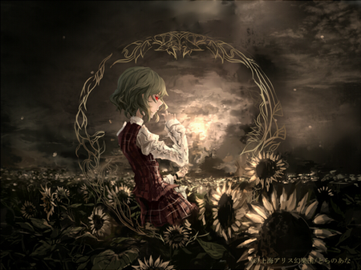 |
| 名前：風見幽香 |
緑化委員会幻想郷支部の支部長。 指揮のフラワーマスターとも呼ばれ、指揮者としても高名。 植物を操る程度の能力を持ってるが、人形や蛍を従える程度の能力も持ち、 スタンド能力は一人につき一つというルールを破っている。 そのため全国幽波紋使い連盟(全幽連)から文字通り破門を受けているが、本人は気にしていない。 さらに分身能力をも使いこなし、実はグリーンサイと同一人物であることが判明している。 最近は例大祭のコスプレ会場などで目撃されているが、レイヤーではなく本人である。 しかし全国コスプレイヤー連盟(全コス連)は黙認しており、何かしらの圧力があったものと思われる。 |
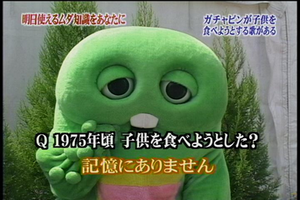 |
| 名前：ガチャピン |
1973年4月2日生まれ、5歳。恐竜人。 あらゆるスポーツの達人で、スキーはもちろんのこと、 オンロードオフロード無関係な車両運転技術、果ては宇宙飛行にも成功している。 料理人としての面も持ち、子供の調理法に詳しい。 格闘技にも精通しており、恐竜人のボディから繰り出される一撃は凄まじいパワーを持つ。 マントを装着することで大気圏内の自由飛行も可能で、災害救助活動など行う。 噴火中のセント・ヘレンズ山に蓋をするアニメーション映像はあまりにも有名。 本人の仕事の関係上、赤いイエティと一緒に行動をすることが多いが、 彼に活躍の場を一切与えず、すべて自身のものにしている。非常に狡猾な性格。 |
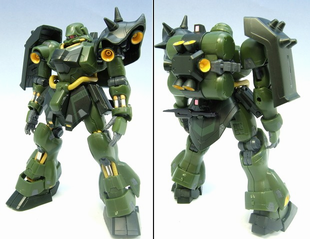 |
| 名前：ギラ・ドーガ |
AMS-119 Geara Doga ザクIIの基本設計をベースに、マラサイのムーバブルフレーム構造を取り入れ開発された機体。 特殊な固定兵装はないが、その分拡張性や量産性に長ける。 パイロットやメカニックからの信頼も厚く、稼働率は高かったらしい。 後のヤクト・ドーガに基本フレームが使用されるほか、多くの派生機を生み出すなど、いぶし銀の名機といえるだろう。 ■スペック 全高 20.0m 全備重量 50.8t 装甲材質 チタン合金セラミック複合材 ■主な武装 ・ビームライフル（またはビームマシンガン） ・ビームソードアックス（ひとつでサーベル・斧・ピックを使い分けることのできる装備） ・シュツルム・ファウストx4（対MS用簡易兵装の使い捨てロケット） ・シールド（裏面にシュツルム・ファウストをマウント可能） ■主な派生機 ・ヤクト・ドーガ ファンネルを装備し、スラスターやジェネレーターなど大きく換装しているニュータイプ用の機体 ・ニコニコ・ドーガ 大衆のために作られたオールドタイプ用の機体 ・ヒマワリ・ドーガ ニコニコ・ドーガ系の現地改修タイプ ・アストロ・ノーカ 農業用に再設計された宇宙開拓機 ・エドノ・タイカ 木製タイプ よく燃えると評判で、名物になっている |
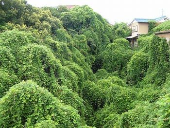 |
| 名前：葛 | |
英名kudzu 「クズー」あるいは「カァズー」と発音されるらしい。 米国ではデビル・プランツとも呼ばれる。 東アジア原産のマメ科のつる性多年草。最強の植物のひとつであるといえる。 条件さえ適していればあっという間に繁茂し、その一帯を覆いつくしてしまう。 中低木くらいならば容易く絡みつき、その全面を隠してしまう。 電信柱を緑の柱にしている姿もよく見られる。 他の種を侵略し住処を奪う侵略植物、悪の面が非常に強い。 根は良質のデンプンを多く含み、古来から食用として親しまれていた。 今でも葛湯や和菓子として家庭に登場している。 また身体を温め血行を良くする薬効を持ち、文字通り葛根湯の材料にもなっている。 ただし混じり気のない葛100%のものは流通量が少なく、 多くの場合はイモ類やコーンのデンプンを混ぜたものや、外国産のものが出回っている。 根だけでなく、花が終わった後の時季に芽を天ぷらにして食べると甘くて美味。 ちなみに花は美しく、ルピナスのように立ち上がり、熟したマスカットのような香りを漂わせる。 果実は小さなマメ袋をたくさんつけ、多くの虫たちのエサとなる。 飼料としても使われた経歴があるほか、蔓の繊維を使って衣類に用いられていた。 強靭な蔓は現在もクラフトの材料として用いられている。 いくつかの家紋に用いられている。秋の七草としても有名。文化面でのレベルも高い。 なお砂漠緑化の材料として用いられたこともあるが、条件が合わなかったのか成果は上がっていない。 またクズからバイオマスエタノールを抽出する技術が既に確立している。 良くも悪くも、植物の生命力と人間との関わりをすべて体現したかのような種であり、 我が緑化委員会では名誉植物賞を与えている。 世界侵略的外来種ワースト100へのランクインだけでは勿体無い種である。 余談であるが、ドミニアでもその勢力を拡大しており、土地を破壊して回っている。
|
|
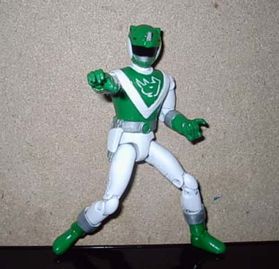 |
| 名前：グリーンサイ |
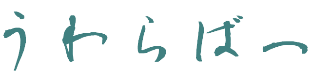 |
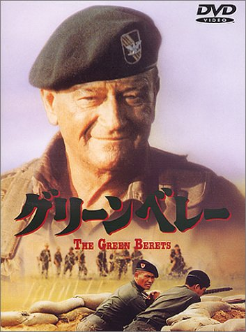 |
| 名前：グリーンベレー |
アメリカ合衆国の特殊部隊 装備：頭 価格：3000ギル 防御力+19 魔法防御+13 回避率+10 魔法回避+0 ＨＰが１０％アップ 備考：サテライトが必ず落とす |
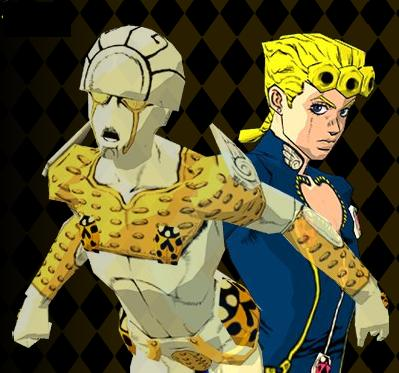 |
| 名前：ゴールド・エクスペリエンス | ||||||||||
命を生むスタンド。 主に荷物を盗んだり、おかっぱ頭をゆっくりさせたり、飲尿したり、拳銃をバナナにしたり、 飲尿したり、駐車場をカエル天国にしたり、蛇をキスさせたり、飲尿したり、 ワキガの見せ場をつくったり、７ページ消費したり、燃えるごみを分別してたり、飲尿したり、 ナランチャをここに置いて行ったり、飲尿したり、あと飲尿したりしている。 |
||||||||||
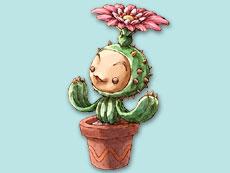 |
| 名前：サボテン |
シャボテン、仙人掌、覇王樹、カクタスなど呼ばれている。 スコールに合わせてR2を押すと出現。走るよりバックしたほうが速い。ポストの中によく入っている。 リュークとキッチェを父母と慕い、語尾に「ぢゃ！」とつけてしゃべる。 その多くが多肉植物であり、内部に水分を溜め込んでいる。 他の植物のように水を与えると根腐れを起こしやすいが、 「水をやらなくていい」というのは誤りで、本来は水を好む植物である。 しかし弱点は水属性である。ウォーターⅠを属性攻撃にジャンクションするとよい。 茎は筒状または球状に退化し、葉は棘状になっているものが多い。 うかつに近づくと針を飛ばして1000の固定ダメージを与えてくるので、 HPの桁数が少ないキャラクターは十分に注意が必要である。 「うちは4桁だから」といって魔法習得値を稼ぐために乱獲していると、 巨大なサボテンが現れ10000ダメージを与えてくるので蘇生魔法を十分にドローしておくべきである。 倒しても経験値が0なので低レベルクリアではお世話になるだろう。 |
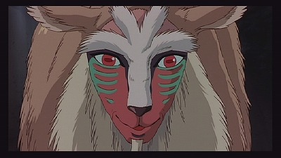 |
| 名前：シシ神 |
命を与えたりするらしいがゴールド・エクスペリエンスと被っている。 なので、逆に命を奪うことで差別化を図ろうと努力しているばけもの。 太陽の光を浴びるだけで死ぬあたりすごいのか弱いのかよくわからない。 水に浮くので、比重がものすごく軽いのだろう。しかし飛んでいかないので空気よりは重い。 よく首が取れる芸を披露するが、ペンギン村では人の首は取れるのが常識である。 しかしその首を巡ってオオカミ少女とのラブロマンスが生まれたりする。 |
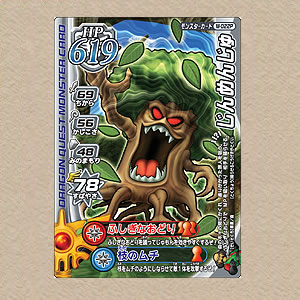 |
| 名前：じんめんじゅ |
顔がついているトレントの一種。 本来は非常に温厚な性格なのだが、人類が自然を壊し植物に対して横暴を振るっていることに激怒。 人間と争うハーゴンに一族全体で魂を売り渡し、日夜人間と戦っている。 いわゆる過激派と称されるが、本来は争いを好まぬ性格で、和平の道の探求を続けている一派も存在している。 彼らは一族が自然そのものであり、緑化される緑そのものなのである。 |
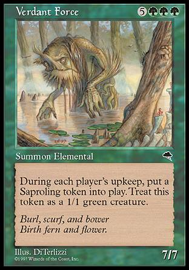 |
| 名前：新緑の魔力 | |
巨大なサイズを持つクリーチャーであり、その強力な能力目当てによくリアニメイトされる。 毎ターン苗木トークンを生み出し、あっという間にフィールドを緑化していく。 例え珊瑚礁だろうと陰謀団の貴重品室だろうと大焼炉だろうと浮氷塊だろうと地下格納庫だろうと、 それがどんな土地であろうが、苗木を植林していく姿勢は素晴らしい。 テンペスト当時から"Best Fatty Ever Printed"(今までで最も素晴らしいファッティ)の称号で呼ばれていた。 最近になって基本セットの9版、および10版にて再録されたので見かけることも珍しくないだろう。 しかしタフネスが７と、甲鱗様のパワーの射程圏内である。 やはり甲鱗様に勝るクリーチャーなど居るはずもないのだろう。 甲鱗様は至高の存在である。 甲鱗のワーム様を称えよ！敬え！奉るのだ！ |
|
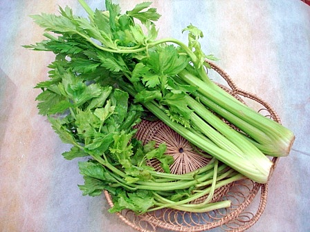 |
| 名前：セロリ |
celery、学名: Apium graveolens var. dulce SMAP ではなく 山崎まさよしのシングルCD及び曲名である。 セリ科の植物。清正人参とも呼ばれる淡色野菜。 ほぼすべての部位が食用になり、スープ、シチュー、漬物などに使われる。独特の強い香りから嫌う人も多い。 古来から整腸剤、強壮剤、香料としても利用されていて、人間との付き合いも長い。 種、及びその油は子宮を強く刺激し、流産・早産の危険性があるため妊婦は多量に摂取することは避けるべき。 輸入品は検疫の関係で葉がすべて落とされており、国産のものと見分けがつきやすい。 へっぽこ何でも屋セロリを経営しており、ツクラーを中心に非常に人気。 pixiv内にて複数のイラストが確認されているほど。 |
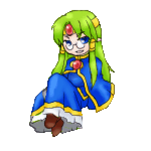 |
| 名前：知恵の神 |
知恵子。 よく勘違いされるがキャラセットはハンドブック産ではなく旧FSM配布素材の改変物である。 メソポタミア神話においてエンキ、またはバビロニア神話においてエアと呼ばれる神らしい。 都市エリドゥの警備員をしているらしいが、羽振りはあまりよくない。たぶん通貨が違うせいだろう。 知恵を授けたことが原因で争いをもたらした伝承どおり、行動がいちいち空回りしている。 知恵があっても頭がいいとは限らないようだ。そこが可愛いんだよそこが。 |
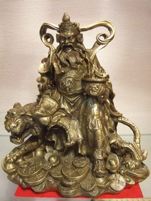 |
| 名前：趙公明 |
小笠原諸島出身の仙人。舞台は中国だがフランス貴族で、カレーさを追求する平和主義者。 ソロでマリリン・マンソンに挑んでズタボロにされたり、おおばさみを装備したりとかっこ悪い点も目立つ。 その正体は巨大な花で、植物の弱点が冷気だということをジャンプ読者に身をもって教えた。 漫画家でもあり、彼の執筆した国立アンニュイ学園は非常に人気が高い。 その人気は毎年のようにコミックマーケットに(エロ・非エロ問わず)専用ブースが設けられるほどで、 時代を超えてアニメ化されるのではないかとまことしやかに囁かれている。 ブラック趙公明という人物も確認されているがおそらく親戚かと思われる。 |
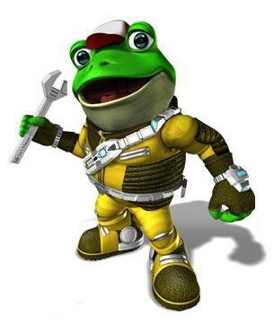 |
| 名前：デッテイウザウルス |
元緑化委員会のメンバー。恐竜の一族。 だが本人はウーパードラゴンだと言って憚らない。ドラゴンとの関連性は不明。 たしかメイプルストーリーの主人公だった気がする。メイプルアイランドだっけ？ 非常に高い知能と戦闘力、ネズミ以上の繁殖力とカービィ級の食欲を持つ。 言語を解するが、口より拳で語る凶暴な性格。 戦闘員及び諜報員として大いに活躍をしたが、複数の色を持つ雑種の存在が露呈したことで、本人の希望により脱退。 規律や忠義を重んじる姿勢は、今でも委員から高い信頼を得ている。 籍は外しているものの、彼の功績を称え名誉会員として名を残している。 |
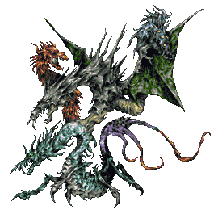 |
| 名前：ドラゴン |
殺意を逆鱗に突き立ててみろ！ トリシマカズヒコ というパスワードで出現。 ドラゴンとはトカゲやヘビに似た強く恐ろしい伝説の生き物であるが、 中日ドラゴンズが元ネタであるのは言うまでもない。 また辰（たつ）という言葉は立浪（たつなみ）選手からとられている。 ドラゴンは長寿であることが多いが、そのすべてが生涯幼女であることを貫く。 しかし古代エジプトでは大人の女性である個体が確認されている。しかも目がLEDで光るとか。 よく宝を集め人に害を為しているが、本人曰く恋っぽいことをしているらしい。姫をさらうのはステータス。 火を吹くことをイメージして赤マナで+1/+0のパンプアップができることが多いが、元々の攻撃力は3000である。 悪斬の天使は苦手。他にもドラゴンキラーや東京タワーなど特攻武器が多く、目の敵にされている。 キノコなどのエサを与えて早いところマスタードラゴンに進化させよう。 |
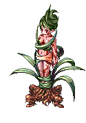 |
| 名前：ドリアード | ||||
「我らと共にあるならば、すべてが平等だ。それまでは、お前の存在は無い。」 オロシャ神話における木の精霊(ニンフ)である。ドライアドとも。 他の精霊と比べ非常に強いマナの力を持ち、ギルダーバインとの過激なプレイにも耐え得る。 ヤヴィマヤやラッシュウッドにおいてはよく森を渡って緑デッキを撲殺している姿が目撃されている。 仲間にするとカウンタマジックやリーフセイバーなど特殊な魔法を習得することが出来る。 その見た目から非常に人気が高く、よく慰み者になっている姿が目撃されている。 怒りを覚えた彼女は精霊術師として成長。祈りをささげ、風林火山の名の下に復讐劇を繰り広げている。 |
||||
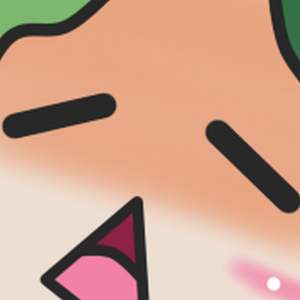 |
| 名前：トリッシュ |
本名トリッシュ・ウナ。 ザ・ボスの娘。つまり、リボルバー・オセロットと兄妹の関係である。 しかしカナダで女子プロレスラーをしていた経歴があり、出自については不明な点が多い。 また目が細い点から「むしろニビシティ出身なのではないか」という説もあるが、 彼女自身はゴーストタイプなので信憑性は低い。 スタンド名はスパイス・ガール。物腰を柔らかくするらしいが、防御力を下げるなどの効果はない。むしろ上がるらしい。 杉本鈴美のように幽霊なので死んでいるものと思われるが、5部終了の時点では生存が確認されている。 初対面の相手に『公衆トイレか？』と名前を尋ねたり、 足がないのにフトモモに補強が入ったストッキングを買いに行かせたりと、なにかと言動に問題がある。 |
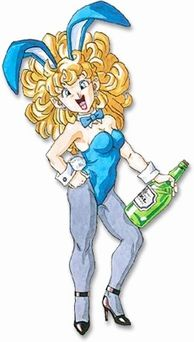 |
| 名前：則巻みどり |
旧姓は山吹。ペンギン村在住の女性教師。よしながみどりと同一人物でもある。 夫と行為に及んでいないにも関わらず男児をもうける人体の神秘。 運のよさ以外のステータスは総じて低めで、装備できるアイテムも少ない。 レベルが上がるにつれて戦闘中に攻撃をしなくなるという困った性質を持つが、 レベル20なれば、悟りの書を使わずに自力で忍者へと転職が可能。 彼女の子はイワン・ウイスキーと呼ばれるサイボーグで、脳を改造されている。こちらはロシア出身。 |
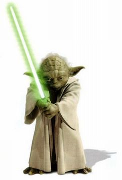 |
| 名前：ピッコロⅢ |
生臭星人でありながら魔法擬人化というよくわからない出自を持つ。 全身緑化に成功した数少ない存在で、水だけで生きる非常にエコな体質。 しかし三度の飯よりご飯が好きらしい。好きすぎて、ご飯の師匠になった。 緑化委員会科学班はそのメカニズム解明に協力を要請、同意を得て研究を進めている。報酬は10円。 趣味は腕伸ばしとカメラ壊し。よく自分の携帯カメラを壊しては周囲に当たり散らしている姿が目撃されている。 |
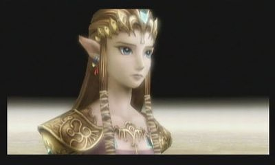 |
| 名前：ヒルダ |
RPGツクールXPのデフォルトデータで、アクターのH。 職業はメイジ。魔法使い女性ってことでXPキャロルの位置。 名前は昼に生まれたことに由来している。 また家訓でカボチャパンツ着用とパンモロを強制されている。 このせいでグレてしまい、緑化委員会で身柄を引き取ることにした。 虫の王"雷神シド・ファブール9世ガエル"(ロケット村在住)と結婚している。 その結果、蒸気機関内蔵の飛空艇に改造されてしまった。 妹の名前はヨルダで、こちらは夜に生まれた。 何故かお城に捕らえられているうえに言葉が通じないらしい。琉球生まれで方言がキツいのだろう。 謎の少年と共にソファに座ってる姿がよく目撃されている。 |
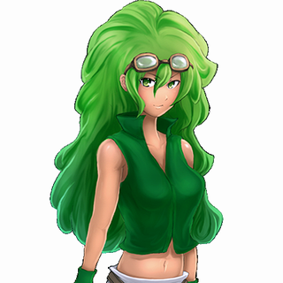 |
| 名前：ファル子 |
元斗皇拳伝承者だが、ミネアンという偽名を名乗りその事実を隠している。 野外でのカムフラージュ率の高さには目を引くものがあり、 トレントに擬装した場合は専門家でも見分けることが難しい。 無理に目立とうとするのではなく、 むしろ背景によりとけ込むことでキャラクターを確立することに成功した、まさに「背景キャラ」の鑑である。 FOXHOUNDからスカウトされたこともあるらしいが、現在はスターフォックスに籍を置いている。 |
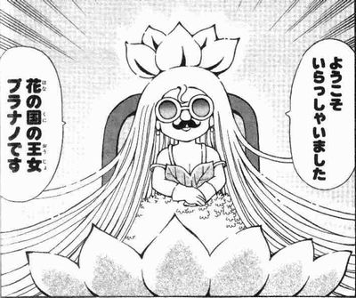 |
| 名前：プラナノ | |
花の国の王女であり、勇者ニケと魔法使いククリの養子。 世界中の植物と繋がっていて、常にエネルギーを供給している。 あらゆる植物を従えており、例えそれが魔物であろうとも、品種改良したり枯らしたり自由にできる。 つまりグリーンサイと同一人物である。 美女、幼女、ギャルと様々な形態を使い分け、不順な感情を持つガンガン派のハートをキャッチしている。 でもね…… もうガンガンはないんだよ…… |
|
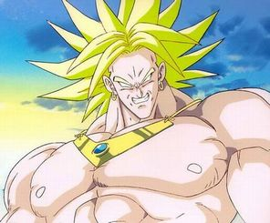 |
| 名前：ブロリー |
緑化委員会と結びつきの強い種族である野菜人の中でも、伝説と呼ばれる存在。 伝説禁止ルールでは使用不可能だが、600族を単騎で6タテできるパワーを秘めており、 厨ポケとして名高く、恐れられている。鳴き声は「 メダロットォ 」 ロリキャラでもあり、よくポケ姦スレで制御装置を付けられて慰み者にされている。 ブロッコリー直営店舗「ゲーマーズ」のマスコットキャラでもあり、 その人気の高さからアニメ作品や映画まで作られた。 これらの作品をヒントにドラゴンボールが執筆されたのは周知のとおりである。 |
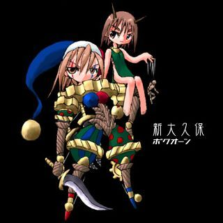 |
| 名前：ボクオーン |
質英雄と呼ばれる、質屋経営者連盟の幹部の一人。 地元新大久保本店の質屋経営もそこそこに、独自に移動型大工場『地上戦艦』を建造。 人間・モンスターと分け隔てなく人材を雇用し、新大久保の大草原にてタイムを製造している。 地上戦艦で作られたタイムは、新大久保の移動民族ノーマッドが日常的に使うほか、 販売ルートが世界各地に確立しており、世界で使われるタイムの9割以上のシェアを占めている。 将来はメルー砂漠(別名東京砂漠)全域をタイム農場として緑化する夢があるようだ。 アバロンの宮廷の料理にもこのタイムは使われているのだが、 冷血で愚かなアバロンの皇帝は大木断やプロミネンス斬で数千年間ボクオーンをいじめ続けている。 |
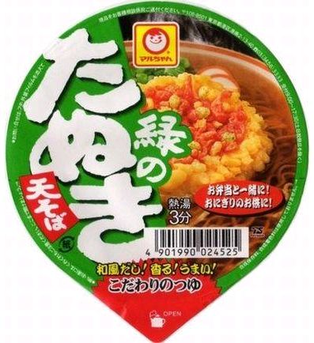 |
| 名前：緑のたぬき |
そばどん兵衛が赤っぽいのが許せないらしい しかしどちらも蕎麦という植物から作られた兄弟である 対して、赤いきつねと血縁関係はない いろいろと複雑な事情があるようだ |
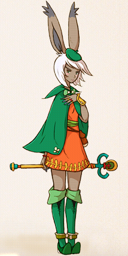 |
| 名前：緑魔道士 |
主にヴィエラ族の女性がつくことのできるジョブで、緑魔法を扱う魔道士。魔法も緑化の時代。 プロテス、スリプル、サイレスなど多くの補助魔法を扱うが、その中でも特にカムダンが非常に優秀。 攻撃だけでなく、盗みやステータス異常などの命中率を高めることができる。 また数あるジョブの中でもスピード成長率が高く、総合的なポテンシャルが非常に高い。 このように緑魔道士が贔屓されているのも、プレイヤーに緑を良い色と認識させるための活動の一環である。 白、黒、赤、青以外の色であればなんでもよかったところ、 召喚士や精霊使い、スナイパーと色が被りながらもあえて緑を選んだのにはそういう理由があるのだ。 もちろん、ヴィエラ族に緑色を基調としたジョブが多いのも同様である。 |
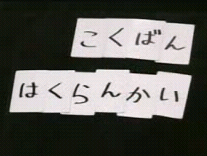 |
| 名前：森蔵 |
ピッコロとコンビを組んでいるお笑い芸人にして、森の精。 その外見の類似点からガチャピンの相方との関連性が疑われているが、定かではない。 森三中のことなら何でも知っている、と自負している。 そよ風を起こしたり、木漏れ日で疲れを癒すなど、多くの系統の魔法に精通しているようだ。 くさタイプだが手足を持ち、３色パンチやきあいパンチなどの便利な技も習得可能。 その体毛(?)の下に何が眠っているのかは不明。謎の多いポケモンである。 |
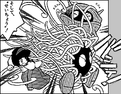 |
| 名前：モンジャラ |
２１ばんすいどうにあらわれる ちかづいたこどもをじょうぶなつるでみずのなかにひきずりこむ らぶりーぷりちーちょうあいしてる |
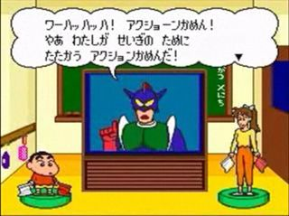 |
| 名前：よしなが みどり |
アクション幼稚園職員。既婚者であり本姓は石坂。ポニテ。 さりげなく名前がみどりなので緑キャラである。ポニテ。 普段は優しいが、怒り状態や泥酔状態になると非常に攻撃性が高くなる。ポニテ。 でも新キャラの上尾先生のほうが粗野キャラが立っているし恋愛ネタも進行中。でもポニテ。 演歌好きで、周囲がどん引きするほど大声で北埼玉ブルースを歌う。あとポニテ。 しかしそれがきっかけで現在の夫との恋仲が進んだ。それとポニテ。 則巻みどりと同一人物である。それでもポニテ。 |
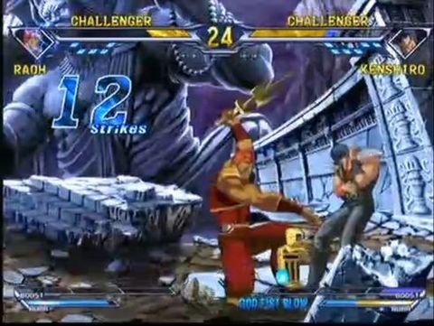 |
| 名前：ラオウ |
世紀末覇者拳王を名乗り、各地に田植えを振興しようとする農夫。好物は天丼、天ざるなど。 格闘技にも精通しており、「力こそパワー」が信条なのだが、 そのせいで一子相伝の暗殺拳をイマイチ活かしきれていない。 小学生に田植えの体験学習をさせたり、ラジオ番組にDJとして出演したり、 ゲームセンターで田植えをモチーフにした技を披露するなど、子供の教育を非常に重んじている。 が、実はただのロリコンであるという説もあり、 「心当たりがあるのか？」「俺の目はごまかせんぞ」という言葉に狼狽している。 防御力が高いのが弱点。最近は小説スレでヒロイン役を務めることが多い。 |
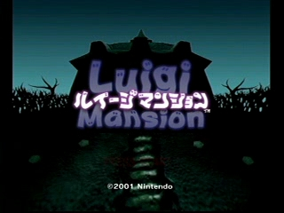 |
| 名前：ルイージ |
兄と共に貧乏な配管工をしていたが、 考古学専攻の大学生デイジー(主人公1-8)を助けるべく恐竜帝国との事件を解決したことで、英雄として名声を獲得。 さらにマンション経営などの不動産業で成功を収める。 最近は兄と共に冒険に出かけており、世間からも注目されているが、 兄から看板キャラの座を奪おうと日々模索を続けている野心家。 元緑化委員会であるデッテイウザウルスは彼の良き理解者。 |
| ◆ vipkohaku2010-green森yahoo.co.jp |